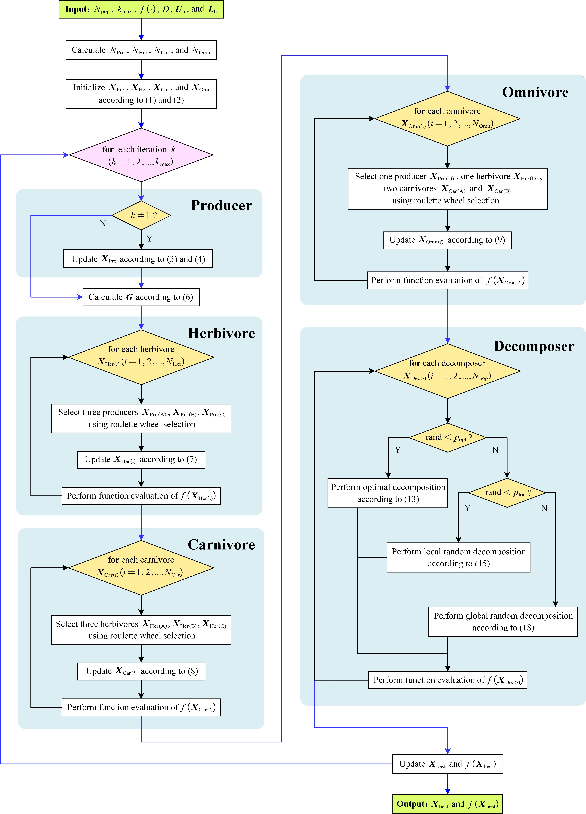

Complex, nonlinear and non-convex global optimization.
Nature-inspired global optimization
Ecological
Cycle Optimizer
A metaheuristic optimizer that models ecological energy flow and material cycling to coordinate exploration and exploitation during global search.
explore
exploit

Ecological cycling provides a dynamic search metaphor.
01 / Overview
A biological metaphor for global search
Search as a living
system of exchange.
ECO treats an optimization population as a connected ecosystem. Useful search information flows through ecological interactions, while material cycling renews diversity when the search needs a new direction.
Model energy flow and material cycling as coordinated search operators.
Producers, consumers, decomposers, and nutrients form a closed information cycle.
Directed information
Energy represents solution quality, allowing effective candidates to guide the population.
Role diversity
Different ecological roles create complementary update trajectories.
Continuous renewal
Decomposition recycles information to sustain a dynamic search balance.
02 / Method
Ecological Cycle Optimizer
Three ecological roles,
one coordinated search.
Each iteration couples information supply, predation-guided interaction, and decomposition-based renewal. The resulting cycle continuously adapts the balance between broad exploration and focused exploitation.
Producers
Producers absorb nutrients and provide candidate information that supports population evolution.
Information supply / exploitationConsumers
Herbivores, carnivores, and omnivores use distinct predation behaviours to exchange and refine search information.
Predation interaction / adaptationDecomposers
Optimal, local-random, and global-random decomposition recycle information and restore diversity.
Information renewal / exploration
InitializeInteractDecomposePreserve better solutions

03 / Experiments
From internal settings to application
Evidence across
three scales.
Our evaluation follows a deliberate progression: establish a stable internal configuration, test performance against state-of-the-art metaheuristics, and validate ECO on constrained engineering design problems.
Explore the full experimental study

Parameter sensitivity
Ten balanced population configurations and 25 decomposition-probability settings are ranked on 23 classic functions.
Numerical benchmarking
ECO is compared with a pool of 30 metaheuristic algorithms on CEC-2014 and CEC-2017, then with the leading competitors on CEC-2020.
Engineering validation
Five representative constrained design problems from CEC-2020-RW assess practical optimization capability.
Ready to experiment with ECO?
04 / Citation
If ECO supports your work,
please cite the paper.
@article{ma2025eco,
title = {Ecological Cycle Optimizer: A Novel Nature-Inspired
Metaheuristic Algorithm for Global Optimization},
author = {Ma, Boyu and Shi, Jiaxiao and Ji, Yiming and Wang, Zhengpu},
journal = {arXiv preprint arXiv:2508.20458},
year = {2025}
}